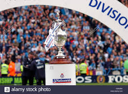
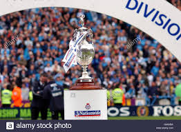

AFC Bournemouth >
League one moving towards cancellation
Bristol Rovers >
How coronavirus has hit lower league football
Burton Albion
Blackpool >
EFL to keep promotion and relegation
Accrington Stanley >
Bury >
Footballer was given one-year drugs ban


 
 HOME
English Premiere League
HOME
English Premiere League